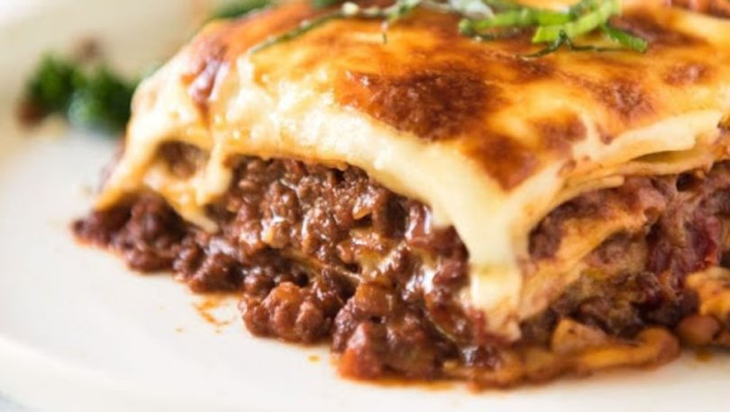

Lasagna

Lasagna, an Italian culinary delight, is a layered pasta dish that is
as visually appealing as it is mouthwatering. This classic comfort food
consists of wide flat noodles, typically made from wheat flour, eggs, and
water, layered with a rich and flavorful combination of tomato sauce, various
cheeses, and a filling of your choice. The filling options can include a savory
mixture of ground meat like beef, veal, or pork, combined with onions, garlic,
and herbs, or a vegetarian version with sautéed vegetables such as spinach,
mushrooms, and zucchini. Each layer of pasta is generously coated with a luscious
tomato sauce, made from simmering ripe tomatoes with onions, garlic, herbs, and sometimes a
hint of wine. Interspersed between the pasta layers are indulgent amounts of creamy ricotta cheese,
mozzarella, and Parmesan cheese, providing a velvety texture and a delightful melding of flavors.
The lasagna is then baked in the oven until the cheese becomes golden and bubbly, and the pasta is tender.
The result is a heavenly amalgamation of flavors and textures, with the pasta absorbing the delicious sauce
and the cheese creating a gooey, melted richness. Lasagna is often served as a centerpiece for gatherings and
special occasions, accompanied by a side of garlic bread and a fresh green salad, making it a beloved
and satisfying dish for pasta enthusiasts around the world.
Ingredients
- Lasagna noodles
- Ground beef, veal, or pork (optional)
- Onion
- Garlic
- Olive oil
- Canned crushed tomatoes
- Tomato paste
- Dried oregano
- Dried basil
- Red wine (optional)
- Salt
- Black pepper
- Ricotta cheese
- Mozzarella cheese
- Grated Parmesan cheese
- Eggs
- Fresh spinach (optional)
- Mushrooms (optional)
- Zucchini (optional)
- Butter
- All-purpose flour
- Milk
- Nutmeg (optional)
- Salt and pepper (for béchamel sauce)
Steps
- Boil the lasagna noodles according to the package instructions until al dente. Drain and set aside.
- In a large skillet, heat olive oil over medium heat. Add diced onion and minced garlic, sauté until the onion becomes translucent and the garlic is fragrant.
- If using ground meat, add it to the skillet and cook until browned. Break it up into small pieces as it cooks. Drain any excess fat if necessary.
- Add canned crushed tomatoes, tomato paste, dried oregano, dried basil, red wine (if using), salt, and black pepper to the skillet. Stir well to combine. Let the sauce simmer for about 20-30 minutes to allow the flavors to meld together.
- In a separate bowl, mix together ricotta cheese, grated Parmesan cheese, and beaten eggs. Season with salt and pepper to taste.
- If desired, sauté fresh spinach, mushrooms, or zucchini in a separate pan until cooked, and set aside.
- Preheat the oven to the temperature specified on the lasagna noodle package instructions.
- Assemble the lasagna by spreading a thin layer of the meat sauce on the bottom of a baking dish. Place a layer of lasagna noodles on top, followed by a layer of the ricotta cheese mixture. Repeat these layers, adding any additional fillings like sautéed vegetables, until you run out of ingredients. End with a layer of meat sauce on top.
- In a small saucepan, melt butter over medium heat. Stir in all-purpose flour and cook for a minute, creating a roux. Gradually whisk in milk, and continue whisking until the mixture thickens. Season with salt, pepper, and nutmeg (if using). This is the béchamel sauce.
- Pour the béchamel sauce over the top layer of the lasagna, spreading it evenly to cover the surface.
- Sprinkle shredded mozzarella cheese and grated Parmesan cheese on top of the sauce.
- Cover the baking dish with aluminum foil and bake in the preheated oven for about 25-30 minutes.
- Remove the foil and continue baking for an additional 10-15 minutes, or until the cheese is melted, golden, and bubbling.
- Remove the lasagna from the oven and let it rest for a few minutes before serving.
- Slice and serve the lasagna, garnishing with fresh basil leaves or additional grated Parmesan cheese if desired.